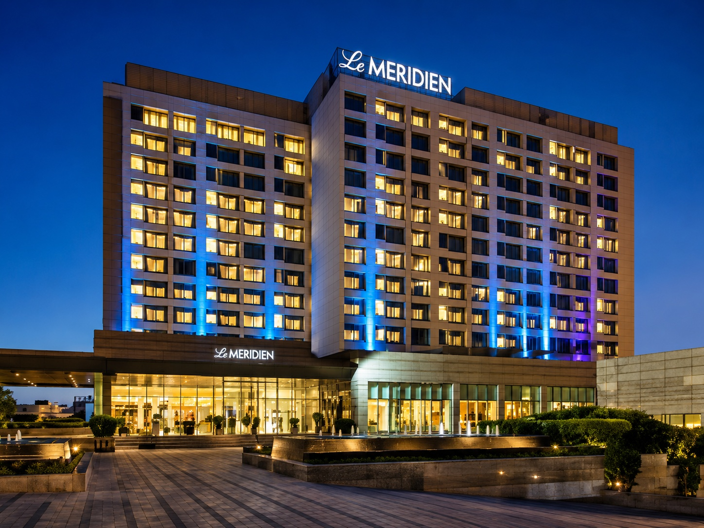

PRUF
ENGINEERING & CONSULTANTS
ENGINEERING & CONSULTANTS

MAJOR PROJECT
Sikanderpur, Gurugram
PROJECT OVERVIEW
Le Meridien is a major hospitality development located
in Sikanderpur, Gurugram, Haryana.
PRUF Engineering & Consultants was associated with the
project through an extensive range of construction and
finishing works, demonstrating the company's ability to
coordinate and execute multiple disciplines within a
large-scale hospitality environment.
Sikanderpur
Gurugram, Haryana
Located in Gurugram, the project forms part of PRUF
Engineering & Consultants' portfolio of major
hospitality developments.
Construction, Finishing & Development Works
PRUF Engineering & Consultants' involvement encompassed
multiple construction disciplines associated with the
hotel development, combining core construction works
with architectural finishing and associated development
activities.

KEY HIGHLIGHTS
A visual overview of structural construction works associated with PRUF Engineering & Consultants' involvement in the project.


Interior and finishing works carried out as part of PRUF's involvement in the hospitality development.


A closer look at external development works forming part of the overall project execution.


EXPLORE MORE